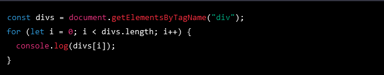
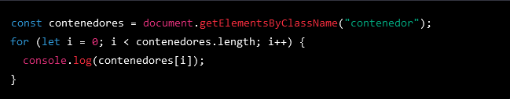
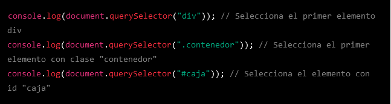
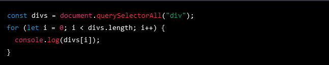
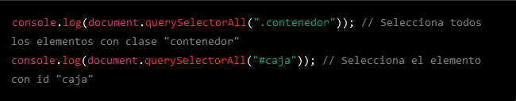
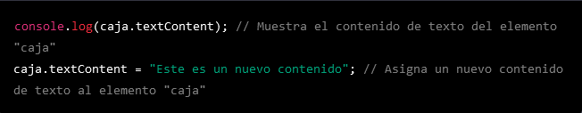
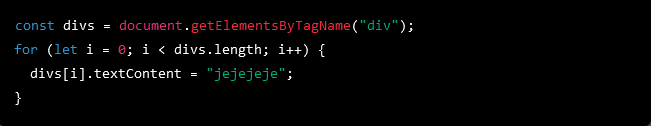
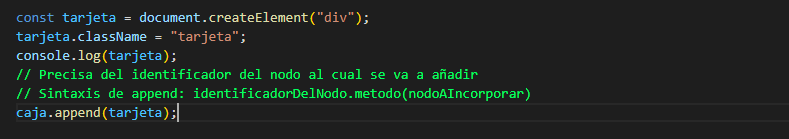
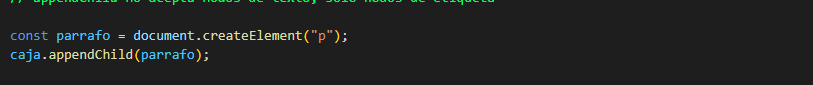
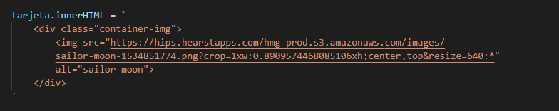

Temario de la clase:
- DOM: Funcionamiento
- Acceso
- Nodos
DOM
El DOM (Modelo de Objeto del Documento) es una interfaz de programación de aplicaciones (API) para documentos HTML y XML. Proporciona una representación estructurada de un documento, permitiendo que los programas accedan a sus elementos y modifiquen su contenido y su estructura.
El DOM representa un documento como un árbol de objetos, donde cada elemento del documento es un nodo en el árbol. Los nodos pueden tener hijos, que a su vez pueden tener hijos, y así sucesivamente. Esto permite que el DOM permita a los programas navegar y modificar fácilmente el contenido del documento.
El DOM también proporciona una serie de métodos y propiedades que permiten a los programas acceder y modificar los elementos del documento de manera sencilla. Por ejemplo, se pueden usar métodos como getElementById para obtener un elemento específico del documento a partir de su ID, o se pueden usar métodos como createElement para crear nuevos elementos y agregarlos al documento.
getElementById
El método getElementById permite acceder a un nodo del Document Object Model (DOM) a través de su identificador. Para usar este método, se debe pasar como argumento el identificador del nodo que se quiere seleccionar. Por ejemplo:
getElementsByTagName
El método getElementsByTagName permite acceder a uno o varios nodos del DOM a través de su etiqueta HTML. Para usar este método, se debe pasar como argumento el nombre de la etiqueta que se quiere seleccionar. El método devuelve una lista de elementos (no un array), por lo que no se pueden usar métodos de array para iterar sobre ellos. Para iterar sobre la lista de elementos, se puede usar un bucle for. Por ejemplo:
getElementsByClassName
El método getElementsByClassName permite acceder a uno o varios nodos del DOM a través de su clase CSS. Para usar este método, se debe pasar como argumento el nombre de la clase que se quiere seleccionar. Este método devuelve una lista de elementos (no un array), aunque solo exista un elemento con la clase especificada. Como con el método getElementsByTagName, no se pueden usar métodos de array para iterar sobre la lista de elementos, pero se puede usar un bucle for para iterar sobre ellos. Por ejemplo:
querySelector
El método querySelector permite acceder al primer nodo del DOM que coincida con un selector CSS específico. Para usar este método, se debe pasar como argumento el selector CSS que se quiere utilizar. Este método devuelve el primer elemento que coincida con el selector especificado, o null si no existe ningún elemento que coincida. Por ejemplo:
querySelectorAll
El método querySelectorAll es similar al método querySelector, pero en lugar de devolver solo el primer elemento que coincida con el selector CSS especificado, devuelve una lista de todos los elementos que coincidan. Como con los métodos getElementsByTagName y getElementsByClassName, este método devuelve una lista de elementos (no un array), por lo que no se pueden usar métodos de array para iterar sobre ellos. Sin embargo, se puede usar un bucle for para iterar sobre la lista. Por ejemplo:
También puedes usar querySelectorAll para seleccionar elementos con una clase específica o con un id específico, siguiendo la sintaxis de selectores CSS. Por ejemplo:
createElement
El método createElement permite crear un nuevo elemento del DOM y asignarle una etiqueta específica. Para usar este método, se debe pasar como argumento la etiqueta del elemento que se quiere crear. Este método devuelve una referencia al elemento creado, que se puede guardar en una variable o usar inmediatamente. Por ejemplo:
className
La propiedad className permite acceder o asignar la clase CSS de un elemento del DOM. Puedes obtener la clase actual de un elemento usando la sintaxis elemento.className, o asignarle una nueva clase usando la sintaxis elemento.className = 'nueva-clase'. Por ejemplo:
textContent
La propiedad textContent permite acceder o asignar el contenido de texto de un elemento del DOM. Puedes obtener el contenido actual de un elemento usando la sintaxis elemento.textContent, o asignarle un nuevo contenido usando la sintaxis elemento.textContent = 'nuevo contenido'. Por ejemplo:
También puedes modificar el contenido de texto de todos los elementos de una colección HTMLCollection usando un bucle for que itere sobre los elementos de la colección. Por ejemplo:
append
El método append permite añadir un nodo o contenido de texto a otro nodo del DOM. Para usar este método, se debe pasar como argumento el nodo o el contenido de texto que se quiere añadir. Este método se utiliza generalmente para añadir contenido de texto, pero también se puede usar para añadir nodos completos. Por ejemplo:
appendChild
El método appendChild permite añadir un nodo a otro nodo del DOM como hijo. Para usar este método, se debe pasar como argumento el nodo que se quiere añadir. Este método no acepta contenido de texto, solo acepta nodos de etiqueta. Por ejemplo:
textContent
La propiedad textContent permite acceder o asignar el contenido de texto de un elemento del DOM. Puedes obtener el contenido actual de un elemento usando la sintaxis elemento.textContent, o asignarle un nuevo contenido usando la sintaxis elemento.textContent = 'nuevo contenido'. Por ejemplo:
También puedes modificar el contenido de texto de todos los elementos de una colección HTMLCollection usando un bucle for que itere sobre los elementos de la colección.